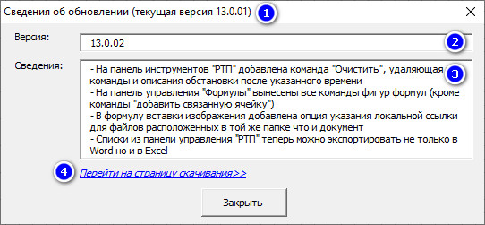

В вышедшей сегодня версии АИГС ГраФиС-Тактик 13.0.02 появился механизм автоматической проверки наличия обновлений.
Строго говоря механизм проверки версий был прописан в коде ГраФиС еще с 11 версии. И он даже работал. Однако, в какой-то момент в его код были внесены изменения, повлекшие его полное фоновое отключение. Отследить это отключение вовремя не удалось, так как код был построен таким образом, что в случае некорректной работы никаких уведомлений не выбрасывалось. И вот в ходе работы над версией 13.0.02 эта ошибка была вскрыта и устранена.
Проверка обновлений
Строго говоря, от пользователя ничего не требуется. Система сама один раз в день проверяет наличие обновлений и при их наличии выдает сообщение пользователю с приглашением перейти на страницу скачивания новой версии.
За проверку обновлений отвечает трафарет “Отчеты” и так как он автоматически загружается при подключении многих других трафаретов ГраФиС, то специально подключать его для проверки обновлений не требуется.
В случае, если на сайте ГраФиС-Тактик выложена версия АИГС ГраФиС более поздней версии, чем та, что установлена, пользователь увидит окно, показанное на рисунке 1.

В заголовке окна указана текущая версия АИГС ГраФиС-Тактик (рис. 1, 1). Ниже указан номер версии, выложенной на сайте (рис. 1, 2). В текстовом поле 3 приведен перечень нововведений в предлагаемой версии. Пользователь может воспользоваться гиперссылкой (рис. 1, 4) для перехода к странице скачивания новой версии.
Проверка обновлений производится один раз в сутки.